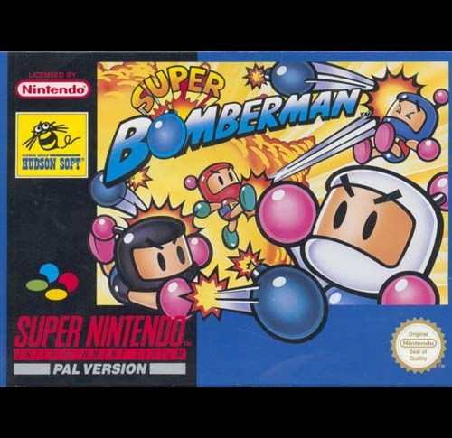

Super Bomberman
Super Bomberman é um jogo eletrônico da série Bomberman, lançado pela Hudson Soft em 1993, para o sistema Super Famicom/Super Nintendo. É o primeiro jogo desta série a ser lançado para o console.
O jogo se passa ao norte da Cidade da Paz (cidade de Bomberman), situada na moderna metrópole de Diamond City, o mal chamado Carat Diamond e sua corte junto com o Cientista Dr. Mok designaram um grupo de robôs com capacidades ofensivas e com a intenção de roubar de Bomberman sua avançada capacidade de combate, Diamond criou um falso Bomberman para ir à Cidade da Paz e sequestrar o verdadeiro Bomberman. Percebendo a situação o Bomberman Negro (Black Bomberman) prepara-se para enfrentar sozinho o falso Bomberman, porém acaba sendo derrotado e tendo seu castelo tomado. Contudo, Bomberman Negro escapa e consegue refúgio junto ao Bomberman Branco (White Bomber) e avisa-o do perigo que está acontecendo. Logo após a onda dos robôs inimigos começarem a avançar em direção a Cidade da Paz, os dois heróis devem juntar forças para vencer este mal.